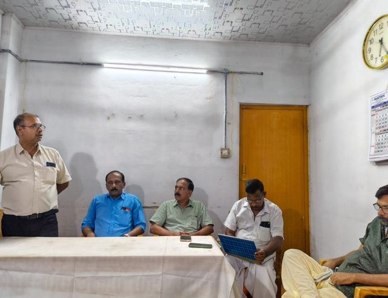
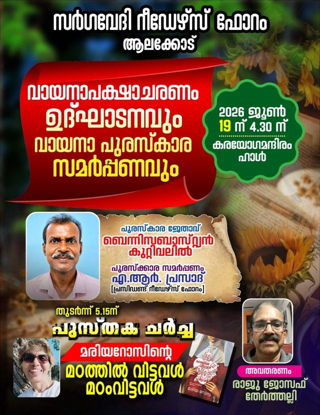
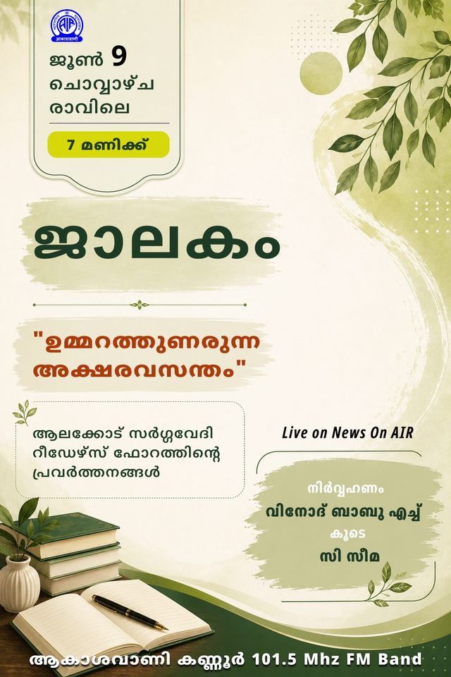

Available Events

വിശിഷ്ട സാന്നിധ്യം: ഡോ. സുനിൽ പി ഇളയിടം (പുരസ്കാര ജേതാവ്) സ്ഥലം: ആലക്കോട് ടൗൺ 05/09/2026

കഥാ ചർച്ച: ഉതിരം (രചയിതാവ്: അംബികാസുതൻ മാങ്ങാട്, അവതരണം: പ്രിയ രാധാകൃഷ്ണൻ) ചർച്ച: പരിഗണനയുടെയും അവഗണനയുടെയും ആവിഷ്കാരം മലയാള കഥയിൽ (അവതരണം: ആൽബിൻ ജോർജ്) സ്ഥലം: സർഗവേദി ഹാൾ, ആലക്കോട് 12/08/2026

ദേശാഭിമാനി വാരാന്തപ്പതിപ്പ് 02/08/2026

പുസ്തക ചർച്ച: വടക്കൻ പാട്ടുകൾ (സംശോധകൻ: കെ വി അച്യുതാനന്ദൻ, അവതരണം: സുരേഷ് ബാബു മണക്കടവ്) പുസ്തക ചർച്ച: ആ നദിയോട് പേര് ചോദിക്കരുത് (രചയിതാവ്: ഷീല ടോമി, അവതരണം: എം ബി ഓമന ടീച്ചർ) സ്ഥലം: സർഗവേദി ഹാൾ, ആലക്കോട് 25/07/2026

പുസ്തക ചർച്ച: വർഷം വന്ന് കനത്തതും ഗ്രീഷ്മം നിന്ന് പെയ്തതും (രചയിതാവ്: സുരേഷ് ബാബു ആലക്കോട്, അവതരണം: രമേശൻ പി വി) ചർച്ച: ഏണസ്റ്റ് ഹെമിങ്വേ എഴുത്ത് ജീവിതം (അവതരണം: കെ ജെ സ്റ്റീഫൻ) സ്ഥലം: സർഗവേദി ഹാൾ, ആലക്കോട് 28/06/2026

അനുസ്മരണ യോഗം: ബിബിൻ തോമസ് അനുസ്മരണം "ഗാനങ്ങൾ: അന്നും ഇന്നും" (മലയാള ചലച്ചിത്ര ഗാനങ്ങളുടെ വശ്യമായ ആവിഷ്കാരം) (അവതരണം: കെ ജി ശശിധരൻ) സ്ഥലം: സർഗവേദി ഹാൾ, ആലക്കോട് 26/06/2026

പുരസ്കാര ജേതാവ്: ബെന്നി സെബാസ്റ്റ്യൻ കുറ്റിവേലിൽ പുസ്തക ചർച്ച: മരിയ റോസിന്റെ 'മഠത്തിൽ വിട്ടവൾ മഠം വിട്ടവൾ' (അവതരണം: രാജു ജോസഫ്) സ്ഥലം: കരയോഗ മന്ദിരം ഹാൾ, ആലക്കോട് 19/06/2026

ആകാശവാണി, കണ്ണൂർ 09/06/2026

വിഷയം: മാനുഷികതയും കലയുടെ അനിവാര്യതയും സ്ഥലം: എ ആർ ഗീതാകുമാരി, സി കെ രാജൻപിള്ള എന്നിവരുടെ വീട്ടുമുറ്റം 07/03/2026

സ്ഥലം: എ.ആർ. പ്രദീപിൻ്റെ വീട്ടുമുറ്റം 21/01/2026